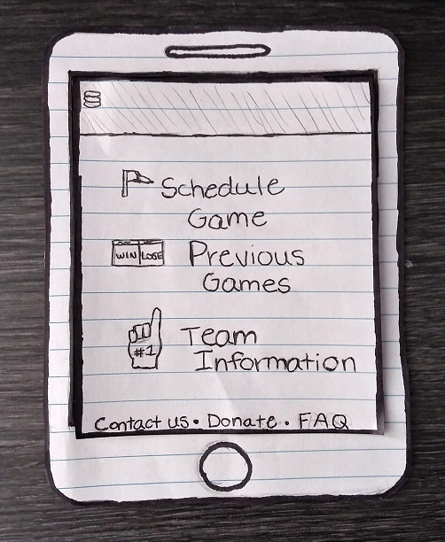

Problem Statement: Amateur Sports Teams

Amateur sport teams currently do not have an organized way to connect to other amateur sports teams in order to play casual games. Our solution should provide these amateur athletes a way to connect with each other and compete.
Affinity Diagram: Amateur Sports Teams
My team and I worked together to come up with several ideas regarding our problem statement, such as potential issues that could arise, organization, expenses, and some extra additions that we thought would be beneficial.
Persona: 4 Personas for Amateur Sports Teams

My team and I worked together to come up with several personas that would most likely use Amateur Sports Teams.
Storyboard: 4 Storyboards for Amateur Sports Teams

My team and I each created a storyboard for our different personas in order to showcase some different reasons on why our app is important.
Sketches: Amateur Sports Teams App
My team and I each created different sketches of our app in order to explore various versions of what it could possibly look like.
Paper Prototype: Amateur Sports Teams App
A functional paper prototype that shows the various features our app will include.
Low-Fi Prototype: Team Finder
A low fidelity prototype that my team and I created in order to show more accurately how the final product will be like.
High-Fi Prototype: Team Finder
My team and I created a more refined version of the previously created low-fi prototype.
Final Presentation: Team Finder
A final presentation on our high-fi-prototype.